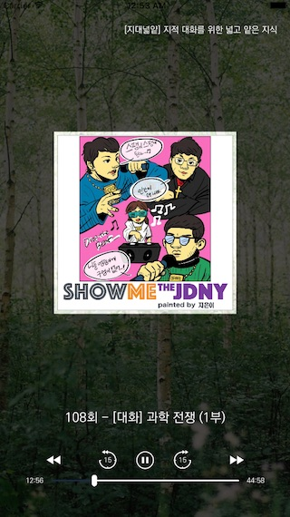
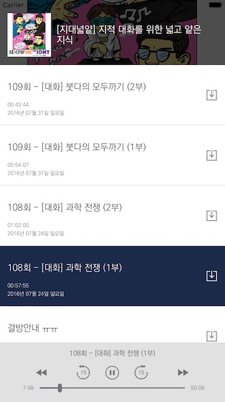

팟캐스트 템플릿
팟캐스트 베이직
팟캐스트 URL을 이용하여 메인 페이지와 피드 목록을 서비스하는 앱
 
명령어
jamkit create --template=podcast-basic --language=ko {프로젝트 이름}
지원언어
한국어(ko)
템플릿 사용자 정의
- ${PODCAST_URL}: 팟캐스트의 URL (필수)
catalogs/MainApp/P_PODCAST_LIST_pane.sbml
catalogs/MainApp/P_PODCAST_RECENT_pane.sbml
- background_image_0001.jpg: 메인 화면 배경으로 사용될 이미지 (선택)
catalogs/MainApp/Images/background_image_0001.jpg